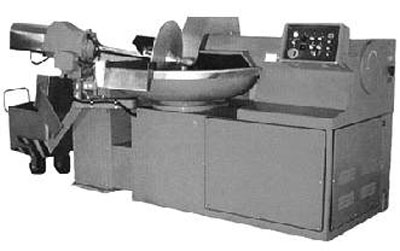

куттер Л5-ФБК

Периодического действия, предназначенная для дозирования, загрузки-выгрузки, перемешивания и измельчения под вакуумом компонентов фарша при производстве всех видов колбас , сосисок и сарделек .
В зависимости от вида колбас исходное сырье ( говядина , свинина ) и другие компоненты , измельченные в необходимой пропорции , загружаются в чашу ( емкость 0,325 и 0,5 м3) загрузочным устройством посредством тележки. Чаша вместе с ножевым валом вращается в режиме перемешивания . одновременно с пульта управления производится управление дозированной подачей жидких компонентов (воды) . Затем закрывается вакуумная крышка, осуществляется вакуумирование и измельчение фарша путем перевода скорости вращения ножей вала и чаши в режим измельчения (реза) . Управление режимами – по программе или оператором по показаниям табло цифровой индикации параметров процесса . По окончании измельчения рабочие органы переводятся в режим перемешивания, открывается вакуумная крышка, и выгружателем чаша опорожняется . Исполнительными механизмами управляет оператор с пульта путем нажатия кнопок и переключения тумблеров .